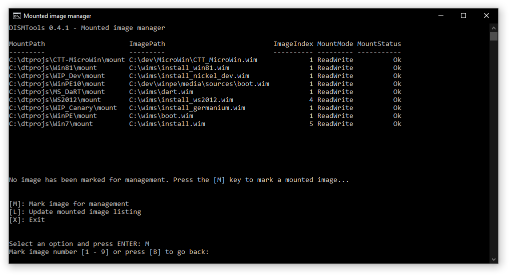
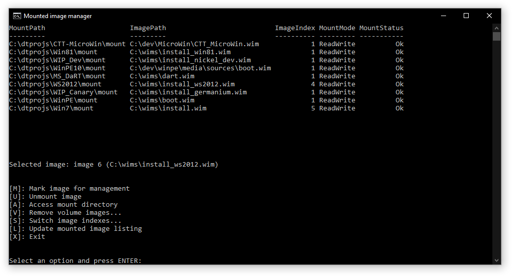
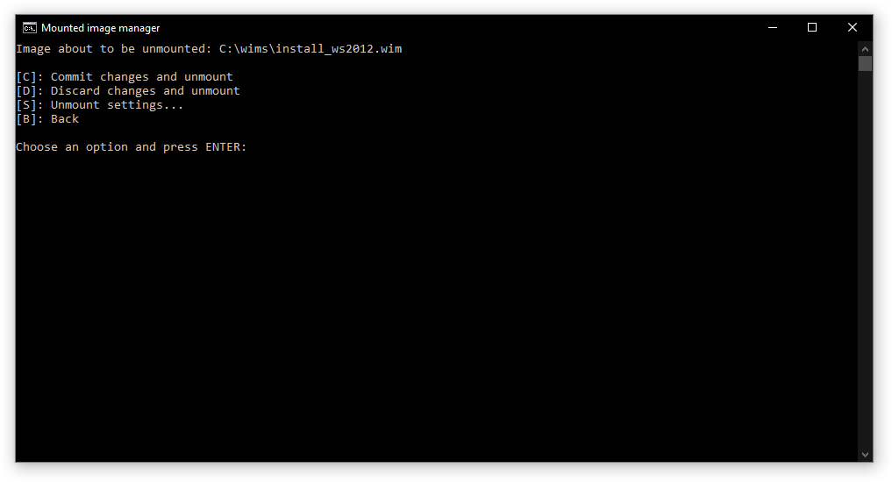
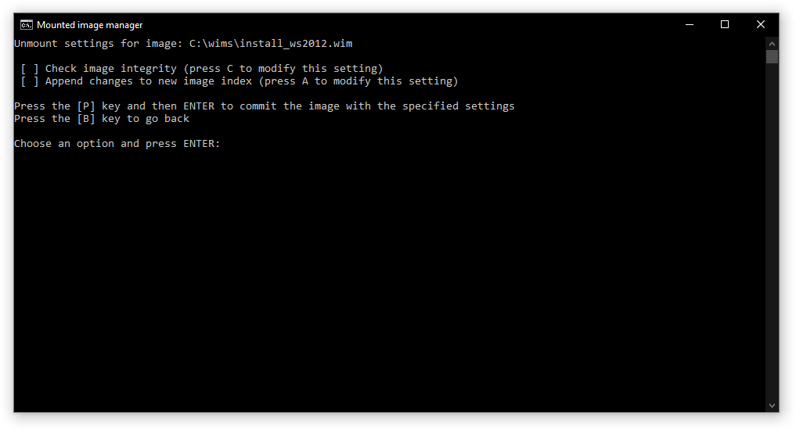
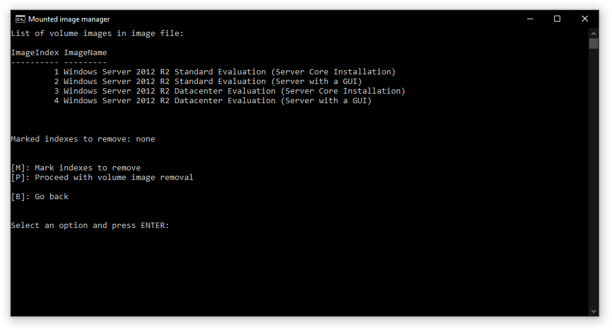
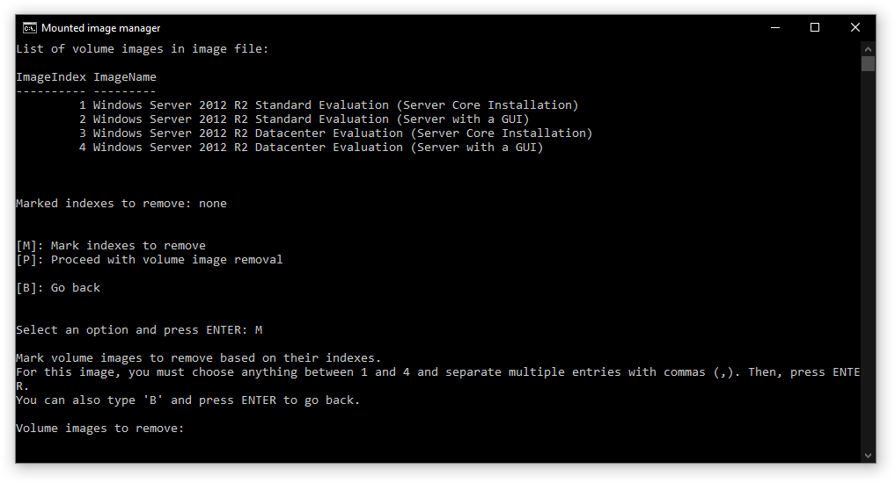
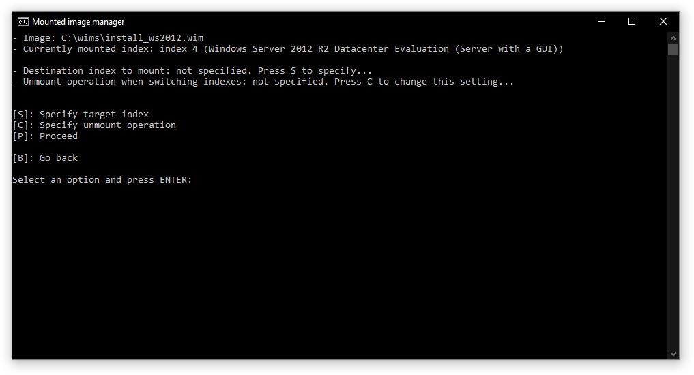

Mounted image manager

The mounted image manager allows you to manage your mounted images easily. You can perform the following tasks with this tool:
- Unmount a Windows image
- Reload the servicing session/repair the component store
- Enable write permissions of read-only mounted images
- Access the mount directory of an image
- Remove volume images (for images with multiple indexes)
- Load a mount directory to projects with no images loaded
Operations
Unmounting a Windows image
You can unmount a Windows image saving changes, discarding them, or with more settings; the last of which will open the image unmount dialog:

For read-only mounted images, clicking this button will directly unmount the image discarding changes. For more information, go to the image unmount page.
Reloading the servicing session/repairing the component store
Depending on the state of the mounted image, the program will let you do one task or the other.
- If its status is Needs remount, you will be able to reload the servicing session of the mounted image
- If its status is Invalid, you may be able to repair the component store of the mounted image. The ability you have depends on whether the image can be repaired or not. If it can't be repaired, your only choice is to discard it
Enabling write permissions
If you want to make changes to a read-only mounted image, you need to enable write permissions. This process will unmount the image and then mount it with write permissions. Do note that the image must be present in its location and must not be in read-only media in order for this process to complete successfully.
Accessing the mount directory
This will open the mount directory in File Explorer, allowing you to browse the files of the Windows image. This is similar to an active installation, so don't delete any files you don't know what they do.
Removing volume images
If the mounted image contains more than 1 index, you are able to remove volume images from it easily. Specify the indexes to remove, and click OK. For more information, refer to the volume image removal page.
Loading mounted images
If you've opened a project with no images loaded, you can easily load the mounted image you want to the project.
Command-line version
DISMTools 0.3 introduces a command-line version of the mounted image manager with which you can easily manage your mounted images as well.
Differences from the GUI version
- The mounted image list is not updated automatically in the CLI version
Accessing this version
You can access the CLI version of the mounted image manager through the Command Console in the Tools menu by typing mimgmgr. You will then see an overview of the mounted images:

Usage
When you load this version of the mounted image manager, you need to mark an image for management. You can easily do this by pressing the M key and selecting an image using its number. If the list was modified in the background, you'll see an updated list.

After marking an image, you can then perform management actions with it.

Tasks
These are the tasks you can do with this version of the mounted image manager:
- If you want to switch to another image, you can mark it (M key)
-
Depending on the status of the image (R key):
- If it needs a servicing session reload (
Status: NeedsRemount), you can reload it - If it needs a component store repair (
Status: Invalid), you can repair it
- If it needs a servicing session reload (
-
When you've finished working with an image, you can unmount it (U key)
- You can access its mount directory (A key)
- If the image contains multiple indexes (volume images), you can remove those from it (V key) or switch to another index (S key, DISMTools 0.3.3 and later)
- If images were mounted or unmounted from an external program, you can update the mounted image listing (L key)
- If the image is mounted with read-only privileges, you can enable write permissions (E key)
Then, press ENTER to perform an action.
Unmounting an image
NOTE: if the image is mounted with read-only privileges, this action will directly unmount it discarding changes

In this menu:
- You can commit the changes of an image and unmount it (C key)
- You can discard the changes of an image and unmount it (D key)
- You can configure unmount settings (S key)
Unmount settings
NOTE: these settings only apply to the commit operation. You can't change settings for read-only mounted images.

These are the same settings you would find in the image unmount dialog. Configure them as you like and press ENTER to perform the unmount operation.
Removing volume images
NOTE: this task is only applicable to images with multiple indexes

In this menu you can mark the volume images (indexes) to remove (M key) and proceed with the removal operation (P key).
Do note that proceeding with the volume image operation will unmount the image discarding changes. Make sure you have saved them before beginning.
During this operation, you can view the image that is being removed. Once this process finishes, you'll go back to the main menu.
Marking volume images to remove
From the image index list shown above, you can pick the volume images to remove by specifying its number. You can specify multiple indexes by separating numbers with commas (,). Finally, press ENTER:

Switching indexes
NOTE: this task is only applicable to images with multiple indexes

In this menu you can specify the target index to mount (S key), specify the unmount operation (C key) and proceed with the switch operation (P key).
Specifying the target index
From the image index list shown above, you can pick the target index to mount by specifying its number. Finally, press ENTER:
Enabling write permissions
This is an automated process that unmounts a read-only mounted image and mounts it again with write permissions. Make sure the location of the source image file is still available before proceeding.